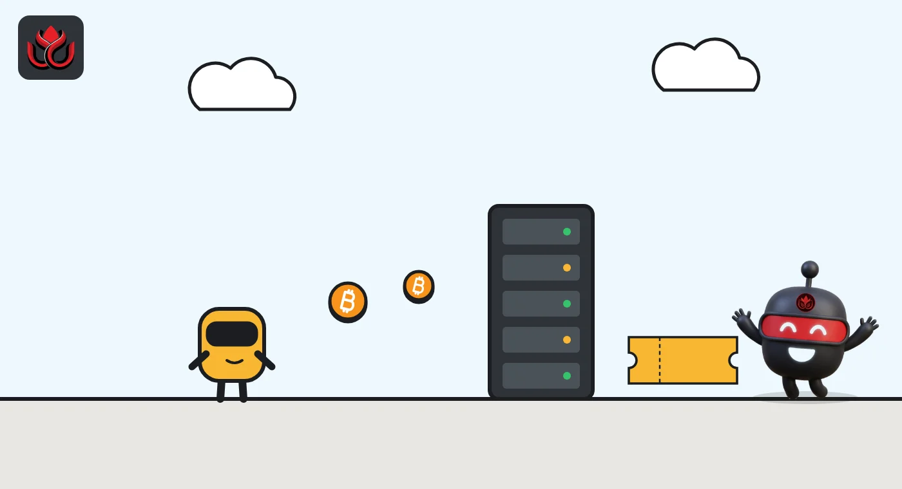
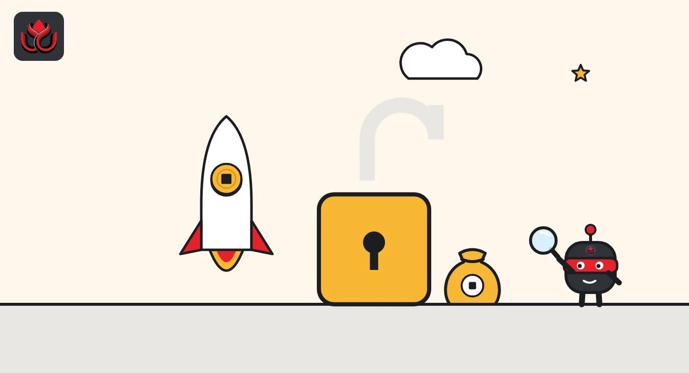

Lightning Labs puts bitcoin wallets for AI agents on mainnet, capped near $244 each
Wavelength lets any app or AI agent send and receive bitcoin without running a node. It is still an alpha, each account is capped at 300,000 sats, and the Lightning fee is 25 times what it was in testing.
Key points
- Since October 23, 2026, anyone can use Lightning Labs' Wavelength on Bitcoin mainnet to give an app or AI agent its own bitcoin wallet.
- Agents plug in through MCP and can pay per API call with L402, with no account or API key.
- It is an alpha: each account holds at most 300,000 sats (about $244 at launch), and Lightning payments cost 0.25%, up from 0.01% in testing.
What launched
Lightning Labs, a developer of Bitcoin Lightning Network software, opened Wavelength on Bitcoin mainnet on October 23, 2026, letting apps and AI agents hold up to 300,000 sats (about $244 that day) per account. Wavelength is a toolkit that adds a bitcoin wallet to any app. With it, people and AI agents can send and receive bitcoin over Lightning and on-chain without running a node (the software that connects to the network), opening payment channels or finding liquidity.
The launch follows an alpha release on July 21, when the toolkit was open to everyone on test networks but mainnet use was invite-only. Stablecoin support is planned but does not yet have a date.
Lightning Labs is clear about the stage the product is in. The launch post says plainly: "This is still an alpha."
Built for agents first
The July post made the target audience obvious, saying "Bitcoin doesn't care if you're a human or an agent, and neither does Wavelength."
Agents connect in two main ways. The first is MCP (Model Context Protocol), the common standard that lets AI models call outside tools. A single command, "wavecli mcp serve", exposes wallet actions such as checking a balance or sending a payment as typed tool calls an agent can use.
The second is L402, Lightning Labs' pay-per-request standard. An agent can pay for a single API call with no sign-up or API key, and a service can charge agents per request in the same way.
Security is handled by separating powers. Creating and unlocking a wallet stays on the command line, so seed phrases and passwords never pass through the agent. Developers can also create receive-only credentials (called macaroons) that cannot sign payments, recover the wallet or change its settings. An agent can even onboard itself through a dedicated page.

How it works under the hood
Wavelength settles transfers on an Ark-style layer. In plain terms, a coordinating server batches payments off-chain, but it never has sole control of user funds. Users keep their own keys and can run an "exit" command at any time to move their balance back onto the Bitcoin blockchain without anyone's permission. Wallets can be restored from a seed phrase.
There is a maintenance quirk. Funds sit in off-chain outputs called VTXOs, which must be refreshed roughly every two weeks. The wallet does this automatically and for free if it is opened during the refresh window. If it stays offline longer, Lightning Labs says the funds are not lost and are recovered when the client reconnects to the server.
What the toolkit includes
When Wavelength first appeared on July 21, Lightning Labs described it as a toolkit with just six commands: create or unlock, balance, receive, send, activity and exit. Every off-chain payment uses standard Lightning invoices (BOLT 11), and on-chain deposits and withdrawals are supported. Liquidity comes through Lightning Labs' own Loop service.
Developers can plug it in several ways: a gRPC or REST client, an embeddable SDK, a WASM package that runs in a web browser, and the MCP server for agents. The July post also said stablecoin support would come through Taproot Assets, Lightning Labs' protocol for issuing other assets on Bitcoin.
Wavelength builds on earlier agent work at the company. Its blog shows posts on open-source Lightning tools for agents in February 2026, on L402 as a payments protocol for agents in March, and on an AI chat feature for node operators in its Terminal product in August. A live demo wallet on signet, a Bitcoin test network, is available in the browser for anyone who wants to try it without real funds.

Limits and fees
Because this is an alpha, Lightning Labs has capped how much can sit in a wallet. Each mainnet account can hold up to 300,000 sats (0.003 BTC), and a single VTXO can hold up to 50,000 sats. At a bitcoin price of about $81,330 at the start of October 23, according to CoinGecko, the account cap was worth roughly $244.
The fee is where the biggest change shows. During the July alpha, Lightning Labs charged 1 basis point (0.01%) on Lightning transactions. On mainnet, the service fee is 0.25% on both sending and receiving over Lightning, plus normal routing fees. Other costs include a small dynamic fee on transfers inside Wavelength, the normal network fee for deposits, bundled fees for withdrawals to a bitcoin address, and only Bitcoin network fees for a unilateral exit. Users see an estimate before paying.
Wavelength mainnet limits
sats
100,000,000 sats = 1 BTC. Source: Lightning Labs, October 23, 2026
Timeline
Wavelength alpha opens on signet and testnet; mainnet by invite; 1-basis-point Lightning fee
Lightning Labs adds an alpha AI chat to its Terminal product for node operators
Wavelength opens on mainnet for everyone; 0.25% Lightning service fee
LC Insight analysis
This section is our reading of the facts above, not a statement of fact.
- We think Wavelength is Bitcoin's most direct answer yet to stablecoin payment systems for agents, such as x402. The pitch: an agent holds and spends bitcoin with a few lines of code, and no company holds its keys.
- The cap and the alpha label make this a developer tool for now, not a payments network. That is the right call. Letting software agents hold unlimited funds in a brand-new system would be risky for everyone.
- The fee jump from 0.01% to 0.25% is the number to watch. Machine payments are tiny and frequent, so percentage fees add up, and developers will compare it with stablecoin rails that advertise near-zero costs.
What's next
- When stablecoin support arrives, and on which asset
- Whether the per-account cap is raised after the alpha
- Adoption of L402 endpoints by API providers
- Security reviews of the Ark-style settlement layer
Disclaimer. This article is based on public information and the sources listed below as of the update time shown. It is for information only and is not investment, legal or tax advice. Figures may change as companies and authorities publish new data.